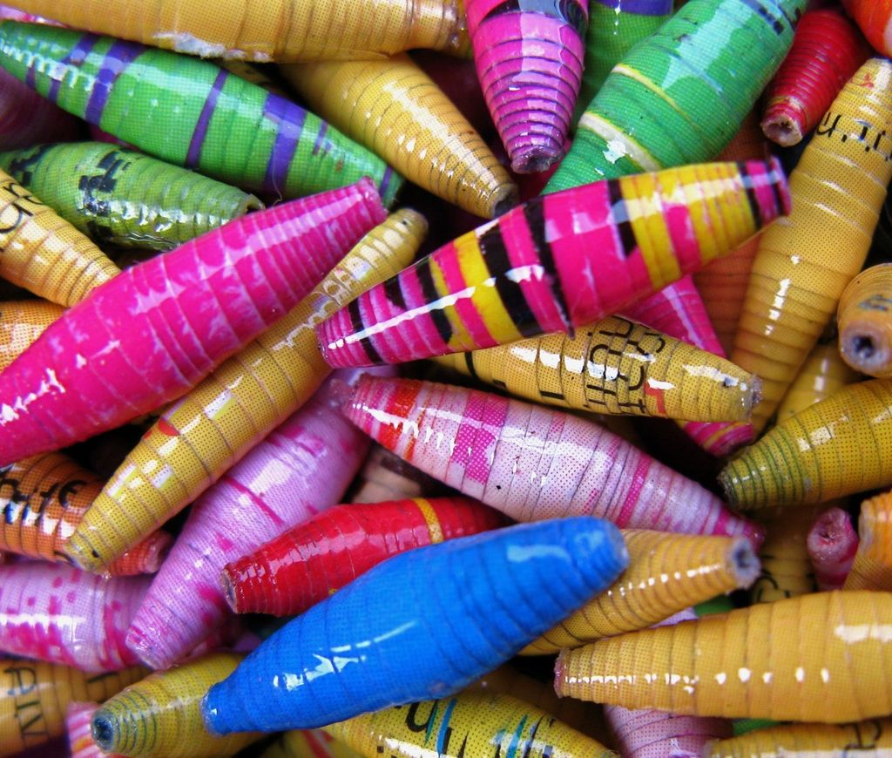

I LOVE PAPER BEAD-MAKING!!
I love making beads so much it is almost weird. If you looked at My Dreams page you probably now know that I am obsessed with the environment and lookingafter it. If you don't know what paper bead-making is, it is the making of beads out of paper, specifically glossy pages out of old magazines. I enjoy making paper beads for a ton of reasons. It's therapeutic and relaxing. I love how I forget everything and focus on my beads.
I love how simple this is, all I need are just four things:
For me there is no denying that that's a lot of fun. You can try it yourself too by checking out the youtube video below that was also helpful when I learned! Have fun